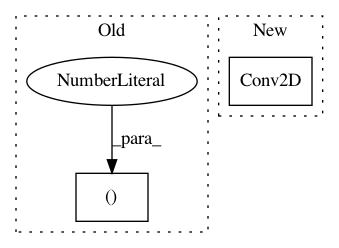

80e1d0aba201d45ba32542327ab1a63e074a759e,tests/end2end/test_single_operator_with_cntk_backend.py,TestKeras2CoreML2ONNX,test_conv_4d,#TestKeras2CoreML2ONNX#,124
Before Change
x = _create_tensor(N, C, H, W)
model = Sequential()
model.add(Conv2D(2, kernel_size=(1, 2), strides=(1, 1), padding="valid", input_shape=(H, W, C),
data_format="channels_last"))
model.compile(optimizer="adagrad", loss="mse")
After Change
x = _create_tensor(N, C, H, W)
input = Input(shape=(H, W, C))
result = Conv2D(2, kernel_size=(1, 2), strides=(1, 1), padding="valid", input_shape=(H, W, C),
data_format="channels_last")(input)
model = Model(input=input, output=result)
model.compile(optimizer="adagrad", loss="mse")
self._test_one_to_one_operator_core_channels_last(model, x)
In pattern: SUPERPATTERN
Frequency: 3
Non-data size: 2
Instances
Project Name: onnx/onnxmltools
Commit Name: 80e1d0aba201d45ba32542327ab1a63e074a759e
Time: 2018-05-11
Author: wschin@outlook.com
File Name: tests/end2end/test_single_operator_with_cntk_backend.py
Class Name: TestKeras2CoreML2ONNX
Method Name: test_conv_4d
Project Name: modAL-python/modAL
Commit Name: b673a26860c1598e7ef66a301743a2ff1d96b61f
Time: 2018-04-16
Author: theodore.danka@gmail.com
File Name: examples/keras_integration.py
Class Name:
Method Name: create_keras_model
Project Name: broadinstitute/keras-rcnn
Commit Name: f15ccfb70e223f19c5f56273a6384a163aeea9e6
Time: 2017-05-31
Author: allen.goodman@icloud.com
File Name: keras_rcnn/layers/object_detection/_region_proposal_network.py
Class Name: RegionProposalNetwork
Method Name: image_features